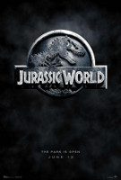

FILMES DA SAGA JURASSIC PARK

Jurassic Park: O Parque dos Dinossauros
Jurassic Park (no Brasil, Jurassic Park - O Parque dos Dinossauros ou Jurassic Park - Parque dos
Dinossauros[2][3]; em Portugal, Parque Jurássico[4][5]) é um filme de aventura e ficção científica estadunidense
de 1993, dirigido por Steven Spielberg e baseado no livro homônimo escrito por Michael Crichton. Produzido pela
Amblin Entertainment e distribuído pela Universal Pictures, é estrelado por Sam Neill, Laura Dern, Jeff
Goldblum, Richard Attenborough, Ariana Richards, Joseph Mazzello, Samuel L. Jackson e Bob Peck. O filme é
centrado na fictícia Isla Nublar, onde John Hammond, um filantropo bilionário, e uma pequena equipe de
geneticistas criam um parque temático em uma ilha, onde as principais atrações são variadas espécies de
dinossauros recriados através da engenharia genética.

Jurassic Park: O Mundo Perdido
Jurassic Park: The Lost World (no Brasil, O Mundo Perdido: Jurassic Park; em Portugal, O Mundo Perdido: Parque
Jurássico) é um filme estadunidense de 1997, do gênero aventura e ficção científica, dirigido por Steven
Spielberg. É a sequência de Jurassic Park, de 1993, e o segundo filme da franquia Jurassic Park. O filme é
baseado no livro homônimo de Michael Crichton, publicado em 1995. O filme é estrelado por Jeff Goldblum,
Julianne Moore, Pete Postlethwaite, Vince Vaughn, Vanessa Lee Chester, Arliss Howard, Richard Schiff e Peter
Stormare.

Jurassic Park 3
Jurassic Park III (no Brasil, Jurassic Park III; em Portugal, Parque Jurássico III) é um filme estadunidense de
2001, dos gêneros aventura e ficção científica, dirigido por Joe Johnston. É o terceiro filme da franquia
Jurassic Park, sendo uma sequência direta de The Lost World: Jurassic Park, de 1997. O filme é estrelado por Sam
Neill, William H. Macy, Téa Leoni, Alessandro Nivola, Trevor Morgan e Michael Jeter. O filme foi produzido pela
Amblin Entertainment e distribuído pela Universal Pictures.

Jurassic World: O Mundo dos Dinossauros
Jurassic World (no Brasil, Jurassic World: O Mundo dos Dinossauros; em Portugal, Mundo Jurássico) é um filme
estadunidense de 2015, dos gêneros aventura e ficção científica, dirigido por Colin Trevorrow e escrito por Rick
Jaffa, Amanda Silver, Derek Connolly e Trevorrow. É o quarto filme da franquia Jurassic Park, sendo uma
sequência direta de Jurassic Park III, de 2001. O filme é estrelado por Chris Pratt, Bryce Dallas Howard,
Vincent D'Onofrio, Ty Simpkins, Nick Robinson, Omar Sy, B. D. Wong e Irrfan Khan. O filme foi produzido pela
Amblin Entertainment e distribuído pela Universal Pictures.